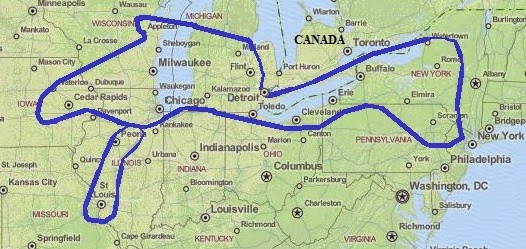

Hello! This is a page about how language in Lansing, MI is changing over time. On this page, you'll find a brief description of the dialect spoken in Michigan. The Lansing page will bring you up to speed with the findings of ongoing research my colleagues and I have been conducting with Lansing speakers. Links to supplemental materials, including how to contact research members can be found on the Contactspage. Enjoy!
The Northern Cities Shift or NCS is a dialect of English spoken in what is known as the Inland North dialect area. A collection of cities surrounding the Great Lakes area of North America. Some of the larger cities in this region include Green Bay, Wisconsin, Chicago, Illinois, Detroit, Michigan, Cleveland, Ohio, Scranton, Pennsylvania and Syracuse, New York. Linguists call the NCS a regional dialect because although the speakers of the dialect are of various social backgrounds (ethnicities, social classes, ages, etc.), they are all similar in that they were born and raised in the same general geographical space, often referred to as the Rust Belt.

Speakers born and raised in this region pronounce vowel sounds differently from speakers in other parts of the United States. Their vowel sounds are in fact shifting, like the name of the dialect suggests!
BAT sounds more like BEYAT
BOT sounds more like BAT
BET sounds more like BAT or BUT
BUT sounds more like BOUGHT
BIT sounds more like BET
These speakers also pronounce the vowels in BOT and BOUGHT differently. In most other parts of the US, these vowels are the same sound.
As of 2006, 34 million people spoke this dialect and for at least the last few decades, sociolinguistic research has found that speakers in these places were continuing to pass it on through generations. Surprisingly, recent studies in Chicago and Syracuse have found evidence of a new dialect in the area. Speakers in these communities are declining in the use of the features mentioned above. My colleagues and I are also finding that the NCS dialect is declining in Lansing. Navigate to the "Lansing" page to take a closer look at what we’ve found and then the "Contacts" page to find out about our plans for further research!